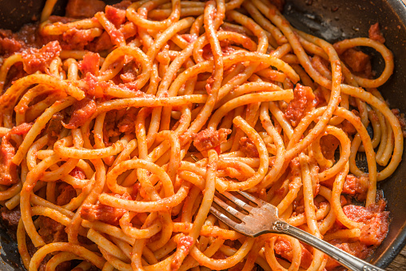

Carbonara
You certanly know this pasta. It is known all around the world,
however not many people know the real recipe.
Rome gives you the opportunity to try it out!

Amatriciana
Amatriciana pasta is the sister dish of Carbonara,
but instead of egg you add tomato sauce.
This dish is also really popular amongst us romans.

Pinsa Romana
Pinsa Romana has recently started to be very popular in Rome.
It is really similar to Pizza, but the dough is much
lighter and it is really soft but crunchy
Porchetta
I could eat tons of Porchetta! It is made also in other parts of Italy,
but in my opinion you can find the best one in Rome.